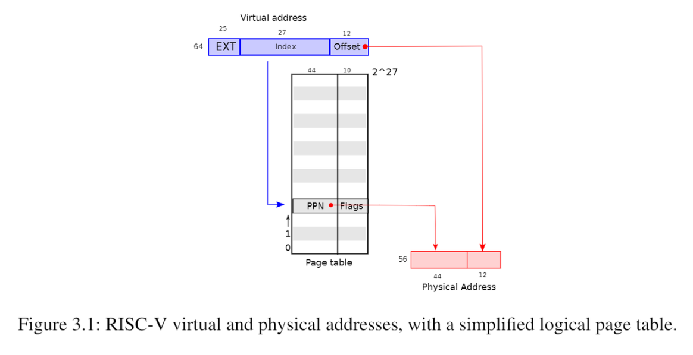
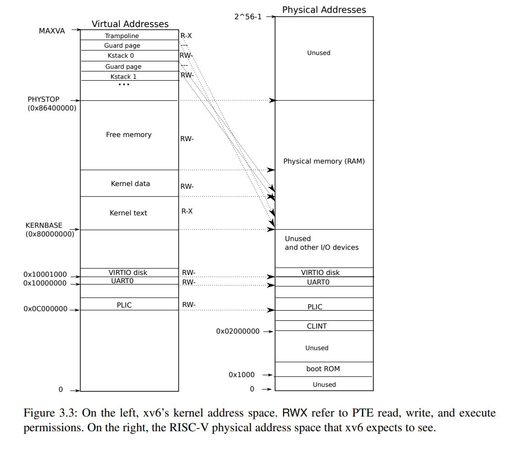
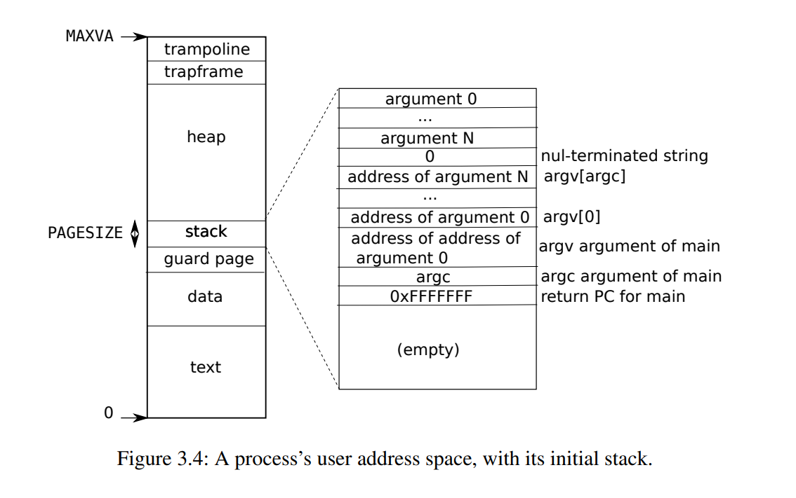

Page Tables¶
约 2171 个字 预计阅读时间 7 分钟
1 Paging Hardware¶
xv6运行于Sv39 RISC-V，即在64位地址中只有最下面的39位被使用作为虚拟地址，其中底12位是页内偏移，高27位是页表索引，即4096字节(\(2^{12}\))作为一个page，一个进程的虚拟内存可以有 \(2^{27}\)个page，对应到页表中就是\(2^{27}\)个page table entry (PTE)。每个PTE有一个44位的physical page number (PPN)用来映射到物理地址上和10位flag，总共需要54位，也就是一个PTE需要8字节存储。即每个物理地址的高44位是页表中存储的PPN，低12位是页内偏移，一个物理地址总共由56位构成。

在实际中，页表并不是作为一个包含了\(2^{27}\)个PTE的大列表存储在物理内存中的，而是采用了三级树状的形式进行存储，这样可以让页表分散存储。每个页表就是一页。第一级页表是一个4096字节的页，包含了512个PTE（因为每个PTE需要8字节），每个PTE存储了下级页表的页物理地址，第二级列表由512个页构成，第三级列表由512*512个页构成。因为每个进程虚拟地址的高27位用来确定PTE，对应到3级页表就是最高的9位确定一级页表PTE的位置，中间9位确定二级页表PTE的位置，最低9位确定三级页表PTE的位置。如下图所示。第一级根页表的物理页地址存储在satp寄存器中，每个CPU拥有自己独立的satp
PTE flag可以告诉硬件这些相应的虚拟地址怎样被使用，比如PTE_V
表明这个PTE是否存在，PTE_R、PTE_W、PTE_X控制这个页是否允许被读取、写入和执行，PTE_U
控制user mode是否有权访问这个页，如果PTE_U=0，则只有supervisor mode有权访问这个页。
2 Kernel address space¶
每个进程有一个页表，用于描述进程的用户地址空间，还有一个内核地址空间（所有进程共享这一个描述内核地址空间的页表）。为了让内核使用物理内存和硬件资源，内核需要按照一定的规则排布内核地址空间，以能够确定哪个虚拟地址对应自己需要的硬件资源地址。用户地址空间不需要也不能够知道这个规则，因为用户空间不允许直接访问这些硬件资源。
QEMU会模拟一个从0x80000000开始的RAM，一直到0x86400000。QEMU会将设备接口以控制寄存器的形式暴露给内核，这些控制寄存器在0x80000000以下。kernel对这些设备接口控制寄存器的访问是直接和这些设备而不是RAM进行交互的。

左边和右边分别是kernel virtual address和physical address的映射关系。在虚拟地址和物理地址中，kernel都位于KERNBASE=0x80000000的位置，这叫做直接映射。用户空间的地址分配在free memory中有一些不是直接映射的内核虚拟地址：
- trampoline page（和user pagetable在同一个虚拟地址，以便在user space和kernel space之间跳转时切换进程仍然能够使用相同的映射，真实的物理地址位于kernel text中的
trampoline.S） - kernel stack page：每个进程有一个自己的内核栈kstack，每个kstack下面有一个没有被映射的guard page，guard page的作用是防止kstack溢出影响其他kstack。当进程运行在内核态时使用内核栈，运行在用户态时使用用户栈。注意：还有一个内核线程，这个线程只运行在内核态，不会使用其他进程的kstack，内核线程没有独立的地址空间。
3 Code: creating an address space¶
xv6中和页表相关的代码在kernel/vm.c中。最主要的结构体是pagetable_t，这是一个指向页表的指针。kvm开头的函数都是和kernel virtual address相关的，uvm开头的函数都是和user virtual address相关的，其他的函数可以用于这两者
几个比较重要的函数：
walk：给定一个虚拟地址和一个页表，返回一个PTE指针mappages：给定一个页表、一个虚拟地址和物理地址，创建一个PTE以实现相应的映射kvminit用于创建kernel的页表，使用kvmmap来设置映射kvminithart将kernel的页表的物理地址写入CPU的寄存器satp中，然后CPU就可以用这个kernel页表来翻译地址了procinit(kernel/proc.c)为每一个进程分配(kalloc)kstack。KSTACK会为每个进程生成一个虚拟地址（同时也预留了guard pages)，kvmmap将这些虚拟地址对应的PTE映射到物理地址中，然后调用kvminithart来重新把kernel页表加载到satp中去。
每个RISC-V CPU 会把PTE缓存到Translation Look-aside Buffer (TLB)中，当xv6更改了页表时，必须通知CPU来取消掉当前的TLB，取消当前TLB的函数是sfence.vma()，在kvminithart中被调用
4 Physical memory allocation for kernel¶
xv6对kernel space和PHYSTOP之间的物理空间在运行时进行分配，分配以页(4096 bytes)为单位。分配和释放是通过对空闲页链表进行追踪完成的，分配空间就是将一个页从链表中移除，释放空间就是将一页增加到链表中
kernel的物理空间的分配函数在kernel/kalloc.c中，每个页在链表中的元素是struct run，每个run存储在空闲页本身中。这个空闲页的链表freelist由spin lock保护，包装在struct kmem中。
kinit()：对分配函数进行初始化，将kernel结尾到PHYSTOP之间的所有空闲空间都添加到kmem链表中，这是通过调用freerange(end, PHYSTOP)实现的freerange()对这个范围内所有页都调用一次kfree来将这个范围内的页添加到freelist链表中
5 User space memory¶
每个进程有自己的用户空间下的虚拟地址，这些虚拟地址由每个进程自己的页表维护，用户空间下的虚拟地址从0到MAXVA
当进程向xv6索要更多用户内存时，xv6先用kalloc来分配物理页，然后向这个进程的页表增加指向这个新的物理页的PTE，同时设置这些PTE的flag

图3.4是一个进程在刚刚被exec调用时的用户空间下的内存地址，stack只有一页，包含了exec调用的命令的参数从而使main(argc, argv)可以被执行。stack下方是一个guard page来检测stack溢出，一旦溢出将会产生一个page fault exception
sbrk是一个可以让进程增加或者缩小用户空间内存的system call。sbrk调用了growproc(kernel/proc.c)来改变p->sz从而改变**heap**中的program break，growproc调用了uvmalloc和uvmdealloc，前者调用了kalloc来分配物理内存并且通过mappages向用户页表添加PTE，后者调用了kfree来释放物理内存
6 Code: exec¶
exec是一个system call，为以ELF格式定义的文件系统中的可执行文件创建用户空间。
exec先检查头文件中是否有ELF_MAGIC来判断这个文件是否是一个ELF格式定义的二进制文件，用proc_pagetable来为当前进程创建一个还没有映射的页表，然后用uvmalloc来为每个ELF segment分配物理空间并在页表中建立映射，然后用loadseg来把ELF segment加载到物理空间当中。注意uvmalloc分配的物理内存空间可以比文件本身要大。
接下来exec分配user stack，它仅仅分配一页给stack，通过copyout将传入参数的string放在stack的顶端，在ustack的下方分配一个guard page
如果exec检测到错误，将跳转到bad标签，释放新创建的pagetable并返回-1。exec必须确定新的执行能够成功才会释放进程旧的页表proc_freepagetable(oldpagetable, oldsz)，否则如果system call不成功，就无法向旧的页表返回-1
7 Real world¶
xv6将kernel加载到0x8000000这一RAM物理地址中，但是实际上很多RAM的物理地址都是随机的，并不一定存在0x8000000这个地址
实际的处理器并不一定以4096bytes为一页，而可能使用各种不同大小的页
颜色主题调整
评论区~
有用的话请给我个赞和 star => 快来跟我聊天~
快来跟我聊天~